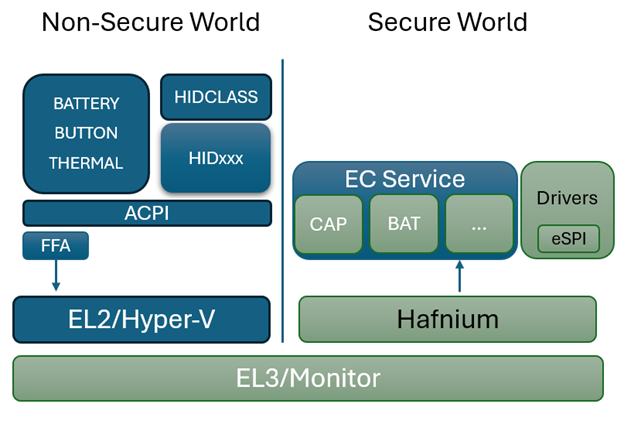

Getting Started
Welcome! If you're new to the Open Device Partnership, this is the right place to begin.
If you're also new to the world of Embedded Controllers and the software that drives them, don't worry—you're still in the right place.
| The Open Device Partnership introduces concepts that are game-changing when it comes to enabling reuse and interchangeability of Embedded Controller components—especially those found in modern laptops. Just as importantly, it brings a revolutionary focus on security and code safety from the ground up. |
To support this, ODP is designed to use Rust as the implementation language.
If you're coming from a C or assembly background, you may feel some initial resistance to learning a new language and unfamiliar patterns. That’s understandable.
But let’s face it: while it's certainly possible to write memory-safe and secure code in C, it's also very easy to make mistakes. With Rust, you'd have to work pretty hard to write unsafe code that even compiles.
As new standards—and potentially even government regulations—begin to push for memory-safe languages in critical systems, the Open Device Partnership aims to be ahead of the curve by bringing that future into the present.
Let's start by familiarizing ourselves with Rust (if you are not already), then we will get a high-level understanding of ODP Concepts in the Concepts section, which explains how the various pieces fit together.
One you've familiarized yourself with the fundamentals of Rust and the concepts and scope of ODP, you are ready to Build Your own modern Laptop.
A quick look at Rust
If you are new to Rust, the venerable "Rust Book" is probably your best bet: The Rust Programming Language
and a great sandbox to play in while learning can be found at The Rust Playground
But before you run off to do that...
Let's look a little at what Rust has to offer first.
The basics are very important to learn because Rust builds on itself and the advanced features are made possible by leveraging the advantages of the basic ones. Most of these have to do with the type and memory safety models that are fundamental to the Rust proposition.
There are several parts to the rust toolchain that you should be aware of to start.
cargo
Cargo is an all-around utility player for the rust environment. It is many things:
- a build manager
- a package manager
- a linter / static analyzer
- a documentation engine
- a test runner
- an extensible system driven by installed modules
rustup
While Cargo is your go-to player for building with a toolchain, rustup is used to setup and modify the toolchain for different needs.
Among its other uses, you may want to familiarize yourself with rustup doc which will open a locally-sourced web book for Rust documentation that can be used offline.
rustc
Rust is a highly optimized compiled language. It's compiler is called rustc.
Typically rustc is not invoked directly; it is usually invoked with cargo build
The compiler is thorough and strict by design. Clean code is required on your part. Unused variables or mis-assigned variable types will result in compile errors.
- The compiler controls and understands memory allocation and deallocation
- It tracks borrows/references (borrow checking)
- Expands macros
Although some might accuse the Rust compiler of being deliberately unforgiving and opinionated, it is not heartless. It will tell you when you've done something wrong, and it will ask for additional information if it can't figure it out on its own (type, lifetime of borrowed values, etc)
Statements and Expressions
- Like many languages, Rust is primarily an expression-based language, where an expression produces a result or an effect.
- Multiple expression types:
- Literal
- Path
- Block
- Operator
- Struct
- Tuple
- Method
- Closure
- etc
- Expressions may be nested and obey an evaluation ordering
```
let y = 5;
let y = { let x = 5; x + 6; };
```
Variable binding and ownership
In other languages, a "let" statement specifies an assignment. In Rust, a "let" statement creates a variable binding. At first glance, this may seem the same, but there are important differences. A variable binding includes:
- Name of the binding
- Whether or not the value is mutable (default is false)
- The type of the value (based on type annotations, inferred by the compiler or default associated with literal expression)
- A value or backing resource (memory allocated on stack or heap)
- Whether or not this binding "owns" the value.
Binding examples (Primitive types)
fn main() {
// name: x, mutable: false, type: i32, value: 5 (stack), owner: true
let _x = 5;
// same result except with explicit type annotation of i32
let _x: i32 = 5;
// now with unsigned integer
let _x: u32 = 5;
//now mutable
let mut _x: u32 = 5;
// creates 2 immutable variable bindings for x and y
// using a tuple expression with integer literal expressions 1 and 2
let (_x, _y) = (1, 2);
// now x & y are mutable
let (mut _x, mut _y) = (1, 2);
}
Copy semantics and Move semantics
Consider this code:
fn copy_semantics() {
let x = 5;
let y = x;
}
This binds the value 5 to 'x' and then binds the value of 'x' to 'y'. So, in the end x == 5 and y == 5. No surprise there, but it should be understood that this is true because the primitive types for this implement the "Copy" trait that allows this.
Now let's look at another bit of code
fn move_semantics() {
// String does not implement the copy trait...
let message = String::from("hello Rustaceans");
let mut _hello = message;
println!("{}", message);
}
If your run this code in the Rust Playground you will see the following output:
Exited with status 101
error[E0382]: borrow of moved value: `message`
--> src/main.rs:8:20
|
4 | let message = String::from("hello Rustaceans");
| ------- move occurs because `message` has type `String`, which does not implement the `Copy` trait
5 | let mut _hello = message;
| ------- value moved here
...
8 | println!("{}", message);
| ^^^^^^^ value borrowed here after move
|
= note: this error originates in the macro `$crate::format_args_nl` which comes from the expansion of the macro `println` (in Nightly builds, run with -Z macro-backtrace for more info)
help: consider cloning the value if the performance cost is acceptable
|
5 | let mut _hello = message.clone();
| ++++++++
For more information about this error, try `rustc --explain E0382`.
error: could not compile `playground` (bin "playground") due to 1 previous error
Types that implement the Copy trait (like integers and booleans) are duplicated on assignment. For other types, ownership is transferred.
Simple primitive types implement the Copy trait — a marker trait indicating that values of a type can be duplicated with a simple bitwise copy
So you can see, the rust compiler, despite being picky, is very helpful. It explains exactly what is happening here:
String does not implement the "Copy" trait, so an assignent 'moves' the value from 'message' to '_hello' so that when we try to reference 'message' later in the print macro, we see the value is no longer there. It even suggests some possible alternatives we might try.
Allocating, Deallocating, and scope
- Memory is allocated when the result of an expression is assigned to a variable binding
- Memory is deallocated when the variable binding that is the owner of the value goes out of scope
- For non-primitive types (on the heap), you may call the
dropfunction (trait) for resources that you control the lifetime scope for. - The drop trait should be custom implemented for resource types that have specific destructor needs.
- Rust calls drop() automatically when a value goes out of scope, but you can override it via the Drop trait if your type needs custom cleanup logic (e.g. closing a file or freeing a resource).
Rust ownership rules
- Each value in rust has an owner (from a variable binding)
- There can only be one owner at a time
- When an owner goes out of scope, the value will be dropped.
Borrowing
Borrowing is the term used for a copy-by-reference. For example:
fn borrowing() {
let mut x: String = String::from("asdf");
// Borrow is a verb… Borrowing a value from the owner
// The result of a borrow is a reference; below an immutable reference
let _y: &String = &x;
// name: y, mutable: false, type: String, value: -> x, owner: false; an immutable reference
// Mutable borrow... the variable binding you are borrowing must be mutable
let _z: &mut String = &mut x;
// name: z, mutable: true, type: String, value: -> x, owner: false; a mutable reference
// You can borrow values stored on the heap or on the stack
let n: i32 = 5;
let _z: &i32 = &n; //is valid… same rules apply as for complex types
}
Borrowing rules
- Only 1 mutable borrow/reference at a time
- As many immutable borrows as you like
- If you have 1 or more immutable borrows and 1 mutable borrow, attempting to use any of the immutable borrows after the value has changed will result in a compile error
Rust uses lifetimes to ensure that borrowed references don’t outlive the data they point to. While often inferred by the compiler, they become important in more advanced usage.
Functions
Rust functions look much like function definitions from other languages. Here's some examples:
// A function that takes no parameters returns no useable result (unit type)
fn do_something() -> () {}
// equivalent to above… more typical
fn do_something() {}
// this returns an i32 with value 3…
// remember return statement is not needed… just leave off the semi-colon
fn get_three()-> i32 {
3
}
- The function starts with
fn. - Rust style conventions prefer "snake case" (underscore separated lowercase words) style for the function name.
- Functions take parameters which are listed within parenthesis following the function name.
- Functions that return a type denote their return type with ->
<type>after the parameter list. - The function body is within { } brackets.
- The result of the last expression executed becomes the return value if no 'return' keyword is encountered.
- The return type () is called the unit type — it’s like void in C/C++, representing ‘no meaningful value’.
Function parameters
- parameters must have a type annotation
- all parameters will be copied, moved, or borrowed from their origins and delivered into the scope of the function (the parameter definition should indicate if they expect a borrow/reference, or an actual value).
fn do_some_things(x: i32, y: String, z: &String, a: &mut String) {}
- x will be a copied value (from i32 primitive)
- y will be a moved value (from the string)
- z will be an immutable borrowed reference
- a will be a mutable borrowed reference
Tuples
- Tuples are primitive types that contain a finite sequence
- Tuples are heterogenous, the sequence does not need to be of the same type
- Tuples are a convenient way of returning multiple results from a function
- Tuples are often used with enums to associate one or more values with an enum variant
example:
let x: (&str,i32, char) = ("hello", 42, 'c')
In the example we define a tuple consisting of three element types: A string reference, a 32-bit integer, and a character. Then we assign literal values for this tuple definition to the binding variable 'x'.
Struct
A Struct (structure) in Rust is much like a structure definition in several other languages.
For example:
struct Example
{
foo: String,
bar: i32,
baz: bool
}
There is also the concept of a 'tuple struct' which is a convenient way to give a name to a tuple that can be treated like a structure, such as the Tuple example we visited above:
struct MyTupleStruct(&String, i32, char)
Remember, tuples can have any number of elements in the sequence.
Enum, Option, and Result
An enum is a way of saying that a value is one from a set of possible values. Most languages have some form of enum, but Rust has an particularly robust level of support around this construct.
Consider this example from the "Rust Book":
enum Message {
Quit,
Move { x: i32, y: i32 },
Write(String),
ChangeColor(i32, i32, i32),
}
One can imagine "Message" being used to direct some operation to do one of the four listed things. But note that each of these "directives" has annotations to describe the associated data type that accompany it. "Quit" needs no parameters, "Move" comes with structured data for x and y, "Write" is passed a String, and "ChangeColor" gets a Tuple.
Option
Option is a way to handle Null values in a way a little different from some other languages. An Option is basically a way to say that something has a value or it has no value (Some or None). Option is an enum that is part of the standard Rust library.
Since Option<T> is not the same type as T, the compiler will not allow an evaluation of a possible Null value.
You can also use the is_some() and is_none() functions of an option to determine if it has a value.
Result
Where Option is the state of "Some or None" Result is the state of "Ok or Err".
Option<T> is used when a value may or may not be present. Result<T, E> is used when a function may succeed (Ok) or fail (Err). Both are enums and must be handled explicitly.
Any operation or function that is executed may potentially fail, and Rust does not employ any sort of try/catch or "on_error" redirections found in other languages. Error conditions are a fact of life and as such are part of the result of doing something. Getting used to evaluating the return value of a function operation may seem annoying at first, but it is actually pretty liberating because it generally simplifies error handling.
Let's consider this function:
fn do_something() -> Result<String, std::io::Error> {
let x:String = "hooray".to_string();
return Ok(x);
}
We can see this function returns the "Ok" result (we don't create an error case in this example). Of course, unless we explicitly documented it, the caller has no idea there will not be an error, so it handles it like so:
fn main() {
let x = do_something();
let y = match x {
Ok(s) => s,
Err(_e) => panic!("Oh noes!")
};
println!("{}", y);
}
The error case never occurs, but if it did, it would probably be inadvisable to simply call panic! as a result. Of course, sometimes there are no good choices, but especially in firmware driver code, casually throwing panic! exceptions is not a good idea.
On that note, you will encounter a lot of sample code from the web and elsewhere that simply advise calling .unwrap() on an option or a result. While often used in examples or quick scripts, relying on .unwrap() in production firmware is discouraged. Define errors explicitly and handle them deliberately.
Functions and methods for user defined types
User define types include enums, structs, and union
impl Student {
fn new_with_username_email(username: String, email: String) -> Self {
Student {
active_enrollment: true,
username,
email
}
}
//method – with methods you add special parameter…
//a variable binding to “self”. This binding can be mutable or //immutable\
fn get_username(&self) -> String { self.username }
fn get_student(email: &str) -> Student { //query db, return student }
}
impl blocks let you associate methods with a type. Methods that take &self or &mut self operate on an instance, while functions without self are typically constructors or associated functions.
Common construction / initialization patterns
- "new" function
- Default trait
impl Default for Student {
fn default() -> Self {
Student {
active_enrollment: true,
username: String::default(),
email: String::new()
}
}
}
Summary
This introduction to key concepts of Rust just touches the surface of the Rust language itself, not to mention the extended ecosystem and community that surrounds it.
The goal of this introduction has been to introduce the fundamental safety and ownership guarantees Rust builds into its core design to alleviate some of the shortcomings that other languages often suffer from. These fundamentals are keystones to understanding the logic behind the rest of the language.
Don't stop here:
- visit Learn Rust - Rust Programming Language and learn the language!
- check out crates.io for a taste of the many thousand 3rd-party packages (crates) that you can import for your project
- Use the playground to experiment as you learn.
- for fun extended learning, visit Rustlings, where you get hands-on exercises to break in your muscle memory for writing solid Rust code.
- Since you are here, you undoubtedly have an interest in using Rust to write firmware, so you should visit Rust Embedded Book for a relevant introduction to using Rust in an Embedded Development Environment.
Concepts
The core firmware of a modern computing device is much more sophisticated than it was a couple of decades ago. What started out on early computers as the Basic Input-Output System (BIOS) firmware that allowed keyboard input, clock support, and maybe serial terminal output designed to give the most rudimentary of control to a system before it has the opportunity to load the operating system, as well as the initial bootstrap loader to bring that onboard, has grown into an orchestration of individual microcontroller-driven subsystems that manage a variety of input devices, cryptography subsystems, basic networking, power management, and even proprietary AI models.
Beyond handling the boot-time tasks, some of this lower-level firmware is meant to run autonomously in the background to monitor and adjust to operating conditions. For example, a thermal control subsystem will take measures to cool the computer if the CPU temperature exceeds optimal levels, or a battery charging subsystem must correctly detect when the power cord has been plugged in or removed and execute the steps necessary to charge the system. Such tasks are generally controlled by one or more Embedded Controllers, oftentimes found as a single System-on-Chip (SOC) construction.
Embedded Controllers are the unsung heroes of the modern laptop, quietly handling power management, thermal control, battery charging, lid sensors, keyboard scan matrices, and sometimes even security functions. There's a surprising amount of complexity tucked away in that little chip.
The drivers and handlers responsible for managing these subsystems must be secure, reliable, and easy to adopt with confidence. This calls for a standardized, community-moderated approach—one that still leaves room for innovation and platform-specific differentiation.
There are many proven standards that define and govern the development of this firmware. For example, UEFI (Unified Extensible Firmware Interface) defines a standard for boot-level firmware in a series of layers, and DICE (Device Identity Composition Engine) defines a standard for cryptographic verification of firmware components for a security layer.
Hardware components issue events or respond to signals transmitted over data buses such as eSPI,UART, I2C/I3C. These signals are monitored or driven by firmware, forming the basis for orchestrating and governing hardware behavior
Historically, much of this firmware has been vendor-supplied and tightly coupled to specific EC or boot hardware. It's often written in C or even assembly, and may be vulnerable to memory-unsafe operations or unintended behavior introduced by seemingly harmless changes.
The Open Device Partnership doesn't replace the former standards, but it defines a pattern for implementing this architecture in Rust.
As computing devices grow more complex and user data becomes increasingly sensitive, the need for provable safety and security becomes critical.
Rust offers a compelling alternative. As a systems programming language with memory safety at its core, Rust enables secure, low-level code without the tradeoffs typically associated with manual memory management. It’s a natural fit for Embedded Controller development—today and into the future.
Abstraction and normalization are key goals. OEMs often integrate components from multiple vendors and must adapt quickly when supply chains change. Rewriting integration logic for each vendor’s firmware is costly and error-prone.
By adopting ODP’s patterns, only the HAL layer typically needs to be updated when switching hardware components. The higher-level logic—what the system does with the component—remains unchanged
Instead, if the ODP patterns have been adopted, all that really needs to change is the HAL mapping layers that describe how the hardware action and data signals are defined and the higher-level business logic of handling that component can remain the same.
ODP is independent of any runtime or RTOS dependency. Asynchronous support is provided by packages such as the Embassy framework for embedded systems. Embassy provides key building blocks like Hardware Abstraction Layers (HALs), consistent timing models, and support for both asynchronous and blocking execution modes.
So how does this work?
A Rust crate defines the component behavior by implementing hardware pin traits provided by the target microcontroller's HAL (possibly via Embassy or a compatible interface). These traits are optionally normalized to ACPI (Advanced Configuration and Power Interface) and ASL (ACPI Source Language) standards to align with common host-side expectations.
From there, the system moves into a familiar abstraction pattern. The HAL exposes actions on those pins (such as read() or write()), and the service logic builds higher-level operations (like read_temperature() or set_fan_speed(x)) using those primitives.
flowchart LR Controller(Controller) --> PinTrait(Pin Traits) --> ASL(ASL) --> HAL(HAL interface) --> Fun(Functional Interface) --> Code(Code action) style Controller fill:#8C8 style PinTrait fill:#8C8
In the case of a controller being switched out, assuming both controllers perform the same basic functionality (e.g. read temperature, set fan speed) only the pin traits specific to the controller likely need to be changed to implement with similar behavior.
ODP Repositories and bookshelves
There are currently more than a dozen separate repositories that make up the ODP offering. This is deliberate - rather than having a single Mono-Repo that contains the full suite, individual repositories allows contributors focused on specific areas to only concern themselves with their repositories of interest rather than devote time and resources to managing a local copy of a large single repository.
However, with separated repositories, a challenge arises when trying to introduce and document the whole of ODP in a consistent manner. For that reason, documents are organized as separate books but "placed on different shelves" according to their scope and audience.
Bookshelves
In the same way that a book shelf in the physical world is a holder of books, an ODP library bookshelf is a holder of web page content. This content may be generated Rust API documentation, or mdbook style contextual information, or in some cases other imported web-displayable content.
The shelves are organized as follows:
- Shelf 1: Introduction and Concepts
- Shelf 2: Examples and Tutorials
- Shelf 3: Supporting crates and SDKs
- Shelf 4: Specifications and API references
ODP Implementation tracks
The patterns, specifications, and reference code that comprise the Open Device Partnership offering covers the full gamut of system firmware creation, but typically boils down to one of three main scopes:
| Boot Firmware (Patina) | Embedded Controllers | Embedded Controller Services |
|---|---|---|
These scopes may be implemented in a secure or a non-secure foundation
and communicate over a variety of suitable data transports

Patina
(Boot Firmware)
Patina is the codename for ODP's Rust-based SDK and framework for UEFI-compliant boot firmware development.
It is based upon the venerable UEFI standard and doesn't seek to reinvent the process of this well-known framework, as it necessarily re-implements these familiar patterns in Rust instead of C.
A review of UEFI
UEFI stands for Unified Extensible Firmware Interface and can be described as broken into a series of layers, as this diagram shows:
 (diagram source: TianoCore, , illustrating the PI Boot Flow from SEC to RT phase)
(diagram source: TianoCore, , illustrating the PI Boot Flow from SEC to RT phase)
This boot-time firmware is executed by the platform main CPU on startup/reset and proceeds through the stages shown in the diagram. As part of its initialization, it may communicate with the embedded system microcontrollers that are also under the control of ODP rust drivers to initiate and orchestrate them to a starting state.
While the majority of ODP development focuses on the DXE phase, Patina also supports implementation in the PEI, SEC and other phases.
Some aspects of UEFI, especially those that have already been deprecated, may not be supported under ODP. These are legacy services, UI facilitators, and some Runtime Support components that either no longer serve a core purpose or can more effectively be implemented in other ways within ODP.
ODP Resources for UEFI
For traditional UEFI development, an SDK called EDK II is often used to supply much of the common functionality.
However, the EDK II presumes the use of C, and ODP is seeking to replace this potentially insecure code base with Rust for future devices.
ODP features a subproject body of code that represents the elements one might traditionally find within the EDK II, but designed for Rust.
(internal note to reviewers: link above is empty - TODO: Replace with link to a github release with an actual cargo doc rendering when ready)
This SDK-like material covers
- Boot services
- Driver binding
- Runtime services
- TPL mutex (Task Priority Level critical sections)
- UEFI protocol
- Component Support
- Component Template
- Parameters
- Hand-Off Block (HOB)
- Scheduler metadata
- Service interface
- Storage support
- Serial logging support
- Serial UART support and std i/o
- Macros and helpers
How this compares to traditional UEFI approaches
There are differences in the ODP approach here in a couple areas. One significant departure is that in ODP there is no traditional SMM (System Management Mode).
SMM is a special-purpose operating mode provided by x86 CPUs (and compatible architectures) for executing highly privileged system-level code, independently of the operating system.
-
It is triggered by a System Management Interrupt (SMI).
-
Code running in SMM has full control over the system, including memory, I/O, and other hardware.
-
It is isolated: the OS (and even hypervisors) cannot access or interfere with SMM execution or memory (SMRAM).
This may seem more than a little significant at first because SMM is used in key EDK II contexts, including:
- SmmCore
- SmmDriver
- SmmCommunication
- SmmVariable
But there is good reason for this omission:
Traditional SMM is not supported to prevent coupling between the DXE and MM environments. This exclusion extends to so-called 'combined' DXE modules also. These patterns are error-prone, increase DXE module complexity, and elevate the risk of security vulnerabilities.
Standalone MM should be used instead. The combined drivers have not gained traction in actual implementations due to their lack of compatibility for most practical purposes and further increase the likelihood of coupling between core environments and user error when authoring those modules. The Rust DXE Core focuses on modern use cases and simplification of the overall DXE environment.
For a technically detailed tour of how to implement UEFI-style boot code under Patina, see Introduction - Developing UEFI with Rust
(internal note to reviewers: link above is empty - TODO: Replace with link to actual rendered book copy from the reference shelf)
What's Next?
In following chapters we'll explore how Patina components interact within the DXE Core, how to define UEFI services in Rust, and how to develop real-world DXE drivers using ODP tools.
Embedded Controller
An Embedded Controller is typically a single SOC (System on Chip) design capable of managing a number of low-level tasks.
These individual tasked components of the SOC are represented by the gold boxes in the diagram. The ODP Support for Embedded Controller development is represented in the diagram in the green boxes, whereas third party support libraries are depicted in blue.
Secure vs Non-Secure
The "owned interface" in this diagram represents the available data transport (UART, eSPI, IC2, IC3, shared memory) and can be considered to be either a "Secure" channel for data communication or a "Non-Secure" channel. An implementation may use more than one transport for different controller and controller service needs.
A "Secure" transport is one that can validate and trust the data from the channel, using cryptographic signatures and hypervisor isolation to insure the integrity of the data exchanged. Not all such channels must necessarily be secure, and indeed in some cases depending upon the components used it may not even be possible to secure a channel. The ODP approach is agnostic to these decisions, and can support either or both patterns of implementation.
Two similar sounding, but different models become known here. One is SMM, or "System Management Mode". SMM is a high-privilege CPU mode for x86 microcontrollers that EC services can utilize to gain access. To facilitate this, the SMM itself must be secured. This is done as part of the boot time validation and attestation of SMM access policies. With this in place, EC Services may be accessed by employing a SMM interrupt.
For A deeper dive into what SMM is, see How SMM isolation hardens the platform
Another term seen about will be "SMC", or "Secure Memory Control", which is a technology often found in ARM-based architectures. In this scheme, memory is divided into secure and non-secure areas that are mutally exclusive of each other, as well as a narrow section known as "Non-Secure Callable" which is able to call into the "Secure" area from the "Non-Secure" side.
Secure Memory Control concepts are discussed in detail with this document: TrustZone Technology for Armv8-M Architecture
SMM or SMC adoption has design ramifications for EC Services exchanges, but also affects the decisions made around boot firmware, and we'll see these terms again when we look at ODP Patina implementations.
Hypervisor context multiplexing
Another component of a Secure EC design is the use of a hypervisor to constrain the scope of any given component service to a walled-off virtualization context. One such discussion of such use is detailed in this article
The Open Device Partnership defines:
- An "owned interface" that communicates with the underlying hardware via the available data transport .
- We can think of this transport as being a channel that is considered either "Secure" or "Non-Secure".
- This interface supports business logic for operational abstractions and concrete implementations to manipulate or interrogate the connected hardware component.
- The business logic code may rely upon other crates to perform its functions. There are several excellent crates available in the Rust community that may be leveraged, such as Embassy.
- Synchronous and asynchronous patterns are supported.
- No runtime or RTOS dependencies.
An implementation may look a little like this:
EC Services
Embedded controller services are available for the operating system to call for various higher-level purposes dictated by specification. The Windows Operating system defines some of these standard services for its platform.
These service interfaces include those for:
- debug services
- firmware management services
- input management services
- oem services
- power services
- time services
Services may be available for operating systems other than Windows.
OEMs may wish to implement their own services as part of their product differentiation.
EC Service communication protocols
With a communication channel protocol established between OS and EC, operating system agents and applications are able to monitor and operate peripheral controllers from application space.
This scope comes with some obvious security ramifications that must be recognized.
Implementations of ODP may be architected for both Secure and Non-Secure system firmware designs, as previously discussed.

In the diagram above, the dark blue sections are those elements that are part of normal (non-secure) memory space and may be called from a service interface directly. As we can see on the Non-Secure side, the ACPI transport channel has access to the EC component implementations either directly or through the FF-A (Firmware Framework Memory Management Protocol).
FF-A
The Firmware Framework Memory Management Protocol (Spec) describes the relationship of a hypervisor controlling a set of secure memory partitions with configurable access and ownership attributes and the protocol for exchanging information between these virtualized contexts.
FF-A is available for Arm devices only. A common solution for x64 is still in development. For x64 implementations, use of SMM is employed to orchestrate hypervisor access using the [Hafnium] Rust product.
In a Non-Secure implementation without a hyperviser, the ACPI connected components can potentially change the state within any accessible memory space. An implementation with a hypervisor cannot. It may still be considered a "Non-Secure" implementation, however, as the ACPI data itself is unable to be verified for trust.
In a fully "Secure" implementation, controller code is validated at boot time to insure the trust of the data it provides. Additionally, for certain types of data, digital signing and/or encryption may be used on the data exchanged to provide an additional level of trust.
Sample implementation links
See Sample System Implementation ⧉ from "Shelf 2"
Tutorials
Our first ODP-Style handler pair (with faked bus semantics)
The microcontrollers used for Embedded Controller purposes are not the same ones used in the example resources referenced by the Rust Book, but if you've started there then you may already have a STM32F3 microcontroller Discovery board and you may have even played with it to blink the LED lights or some other exercises.
Let's build on what we already know from experimenting with the STM32F3 exercises from the Rust Book.
We already know we can use the tooling setup we have to write code for the STM32F3 that will light one of its LED displays when the user button is pressed.
Code to do exactly that can be found in stm32f3-discovers/examples/button.rs of the development board resources.
That code looks like this:
#![no_std] #![no_main] extern crate panic_itm; use cortex_m_rt::entry; use stm32f3_discovery::stm32f3xx_hal::delay::Delay; use stm32f3_discovery::stm32f3xx_hal::prelude::*; use stm32f3_discovery::stm32f3xx_hal::pac; use stm32f3_discovery::button::UserButton; use stm32f3_discovery::leds::Leds; use stm32f3_discovery::switch_hal::{InputSwitch, OutputSwitch}; #[entry] fn main() -> ! { let device_periphs = pac::Peripherals::take().unwrap(); let mut reset_and_clock_control = device_periphs.RCC.constrain(); let core_periphs = cortex_m::Peripherals::take().unwrap(); let mut flash = device_periphs.FLASH.constrain(); let clocks = reset_and_clock_control.cfgr.freeze(&mut flash.acr); let mut delay = Delay::new(core_periphs.SYST, clocks); // initialize user leds let mut gpioe = device_periphs.GPIOE.split(&mut reset_and_clock_control.ahb); let leds = Leds::new( gpioe.pe8, gpioe.pe9, gpioe.pe10, gpioe.pe11, gpioe.pe12, gpioe.pe13, gpioe.pe14, gpioe.pe15, &mut gpioe.moder, &mut gpioe.otyper, ); let mut status_led = leds.ld3; // initialize user button let mut gpioa = device_periphs.GPIOA.split(&mut reset_and_clock_control.ahb); let button = UserButton::new(gpioa.pa0, &mut gpioa.moder, &mut gpioa.pupdr); loop { delay.delay_ms(50u16); match button.is_active() { Ok(true) => { status_led.on().ok(); } Ok(false) => { status_led.off().ok(); } Err(_) => { panic!("Failed to read button state"); } } } }
Of course, the STM32F3 is not an EC and we certainly would have little use for flashing lights on one if it were, but the basic process and principles are the same, and since we already know how to flash the lights, we can use this as a good way to show how and why the ODP framework fits into the scheme.
Let's first posit that the LED and the user button are two separate peripheral components. As such, we probably want two separate ODP handlers to address these, and then some business logic to tie them together. Let's start with the user button.
Addressing the user button
The user button of the STM32F3 will trigger an interrupt signal that can be intercepted by code to react to the button being pressed.
In the environment of an EC attached to an ACPI (or other transport) bus, the controller would be listening to / contributing to signals on that bus.
Recall our diagram of how EC components are attached to the bus through abstraction layers:
flowchart TB HW(Hardware) --> ACPI(ACPI) --> HAL(HAL) --> Listener(Listener)
In this example, we’re not using an actual ACPI or I²C bus, but we can simulate the idea of signal propagation and component decoupling using shared memory and interrupts.
We'll listen to the button interrupt and place a signal into a memory address that is accessible by both our button producer and our LED consumer. This will take the place of the ACPI for us here. In later excercises we'll explore the mappings to the ACPI and the ASL layers in a real Embedded Controller environment.
So let's create that button producer code. It will wait for the interrupt that signals the button action and it will set an AtomicBool at a location in memory named USER_BUTTON_PRESSED that we can interrogate at the listener side.
ButtonHandler.rs
#![no_std] #![no_main] extern crate panic_itm; use cortex_m_rt::entry; use stm32f3_discovery::stm32f3xx_hal::interrupt; use stm32f3_discovery::stm32f3xx_hal::prelude::*; use stm32f3_discovery::stm32f3xx_hal::pac; use stm32f3_discovery::wait_for_interrupt; use core::sync::atomic::{AtomicBool, Ordering}; use stm32f3_discovery::button; use stm32f3_discovery::button::interrupt::TriggerMode; use stm32f3_discovery::leds::Leds; use stm32f3_discovery::switch_hal::ToggleableOutputSwitch; // this will be imported into the listener code for direct visibility rather than transmitting through a bus static USER_BUTTON_PRESSED: AtomicBool = AtomicBool::new(false); #[interrupt] fn EXTI0() { //If we don't clear the interrupt to signal it's been serviced, it will continue to fire. button::interrupt::clear(); // pa0 has a low pass filter on it, so no need to debounce in software USER_BUTTON_PRESSED.store(true, Ordering::SeqCst); } fn main() -> ! { button::interrupt::enable( &device_periphs.EXTI, &device_periphs.SYSCFG, TriggerMode::Rising, ); loop { wait_for_interrupt() } }
Provide an API for controlling the lights
We now have a handler that will tell us when the user has pressed the button, but we still need a way to turn on the lights. Continuing the theme of ODP-style modularity, we will declare an API for light control here.
LedApi.rs
#![allow(unused)] #![no_std] #![no_main] fn main() { let mut status_led; fn lights_init() -> ! { let device_periphs = pac::Peripherals::take().unwrap(); let mut reset_and_clock_control = device_periphs.RCC.constrain(); // initialize user leds let mut gpioe = device_periphs.GPIOE.split(&mut reset_and_clock_control.ahb); let leds = Leds::new( gpioe.pe8, gpioe.pe9, gpioe.pe10, gpioe.pe11, gpioe.pe12, gpioe.pe13, gpioe.pe14, gpioe.pe15, &mut gpioe.moder, &mut gpioe.otyper, ); status_led = leds.ld3; } fn lights_on() { status_led.on().ok(); } fn lights_off() { status_led.off().ok() } }
Tying it together
We now have integrated a handler that will signal us when the button is pressed, and an API for turning on/off the lights. Let's complete the obvious logic and turn on/off the lights in response to the button.
ButtonToLedService.rs
#![no_std] #![no_main] extern crate panic_itm; use cortex_m_rt::entry; use stm32f3_discovery::stm32f3xx_hal::prelude::*; use stm32f3_discovery::stm32f3xx_hal::pac; use stm32f3_discovery::wait_for_interrupt; use stm32f3_discovery::stm32f3xx_hal::delay::Delay; mod ButtonHandler; mod LedApi; fn read_user_button() -> bool { USER_BUTTON_PRESSED.load(Ordering::SeqCst) } #[entry] fn main() -> ! { lights_init() let mut delay = Delay::new(core_periphs.SYST, clocks); loop { // give system some breathing room for the interrupt to occur delay.delay_ms(50u16); // synchronize the light to the button state if read_user_button() { lights_on() } else { lights_off() } } }
Beyond the introduction
You've learned about ODP and its role in modern firmware development.
You've coded some examples in Rust and have become familiar with embedded programming practices.
Our blinking light example gets things started and proves out the basic toolchain and coding practices.
Now you are ready for real-world examples.
Let's see about Building a modern Laptop
You will find a collection of examples on Shelf 2 of the ODP documentation library that will help guide you as well.